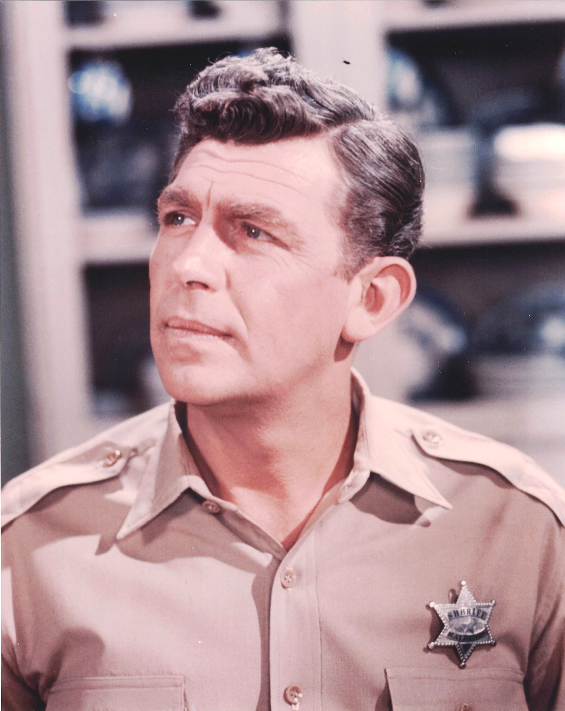

Product No. HEC-0040
$19.99
Shipping: $8.95
Description
8x10 color photograph as Sherrif Andy Taylor
Full Description
Andy Griffith (Deceased) was an American actor, comedian, singer, and television producer best known for two of the most enduring roles in American television history. Born Andy Samuel Griffith on June 1, 1926, in Mount Airy, North Carolina, he first gained national attention as a comic monologist and performer. Griffith became a major star with "The Andy Griffith Show," which aired from 1960 to 1968. He played Sheriff Andy Taylor, the calm, good-natured lawman of the fictional town of Mayberry. The series also starred Don Knotts as Barney Fife and Ron Howard as Opie Taylor. Its warm humor, memorable characters, and small-town setting helped make it one of television's most beloved classic sitcoms. Griffith later found another long-running television success with "Matlock," portraying Atlanta defense attorney Ben Matlock from 1986 to 1995. The role introduced him to a new generation of viewers and became almost as closely associated with him as Sheriff Andy Taylor. His film work included "A Face in the Crowd," in which he gave a powerful dramatic performance as ambitious entertainer Lonesome Rhodes, as well as "No Time for Sergeants" and "Waitress." Griffith also had a lifelong interest in music and recorded numerous gospel and country albums. He died on July 3, 2012, at age 86. His television work, especially "The Andy Griffith Show" and "Matlock," continues to make him a favorite among collectors of classic television memorabilia and autographs.
Condition
Excellent condition